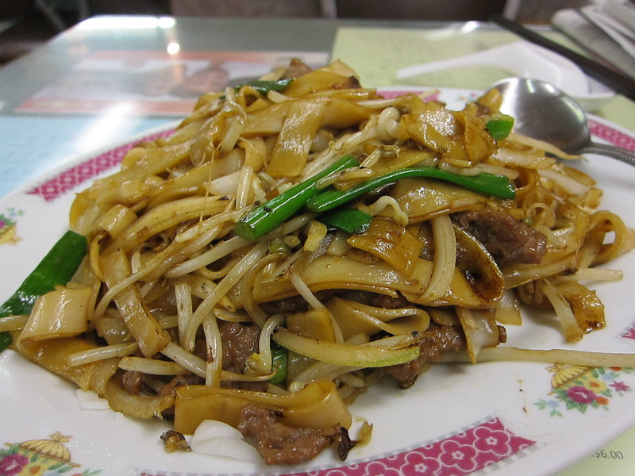

Home
Beef Chow Fun (干炒牛河)

Photo shot by
Mike W.
Description :
Beef chow fun consists of tender, succulent beef slices; soft, springy rice noodles; crispy beansprouts and aromatic Chinese chives. It’s tasty, comforting and nutritious (protein, vegetable and starch in one plate).
Ingredients :
- beef, preferably flank/skirt steak
- light soy sauce
- Shaoxing rice wine
- cornstarch
- fresh sa-ho fun
- beansprouts
- onion, thinly sliced
- Chinese chives
- dark soy sauce
- cooking oil
- Rice noodles
Steps :
- Slice the beef against the grain. Mix with light soy sauce, rice wine, cornstarch, water and sugar. Coat with oil then leave to rest for 15 minutes.
- Gently separate the sa-ho fun by hand into long strands (try not to break them into small pieces).
- Pour oil into a hot wok. Stir in the marinated beef slices. Fry until they just turn pale (do not overcook). Dish out and leave the oil in the wok.
- Put in sa-ho fun. Gently stir around with a pair of chopsticks. When the sa-ho fun begins to wilt, add in beansprouts and onion. Fry for 30 seconds or so.
- Add the beef and Chinese chives. Pour in light soy sauce and dark soy sauce. Cook for a further 30 seconds.